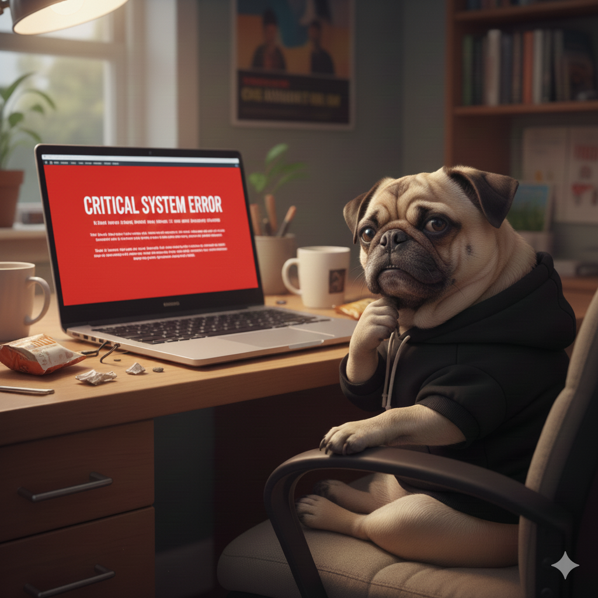

Почему мопсы любят Linux
Проект «Мопсы и Linux» — это ироничный взгляд на мир open-source и администрирования.
Философия
Стабильность и предсказуемость
Мопсы не любят резких изменений. Linux не любит хаос.
Минимализм
Всё необходимое работает без лишних сложностей.
Open Source
Прозрачность и свобода
Как и мопсы, Linux открыт миру и не требует объяснений.
Адаптация
Можно подстроить систему под свои нужды.